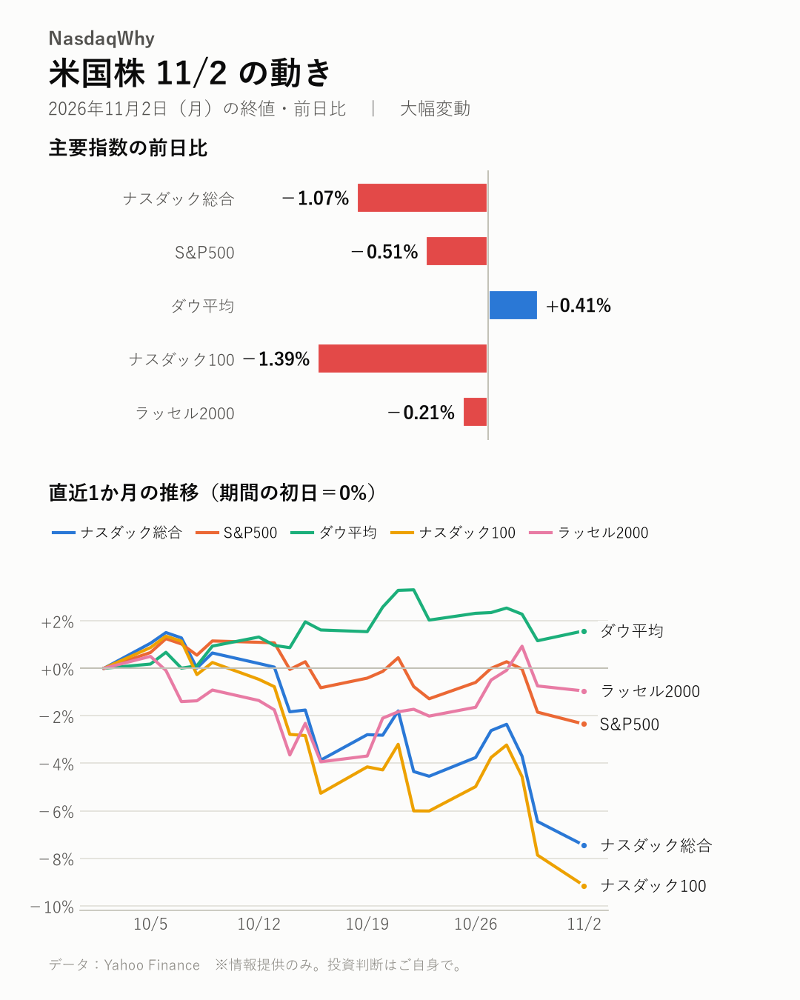
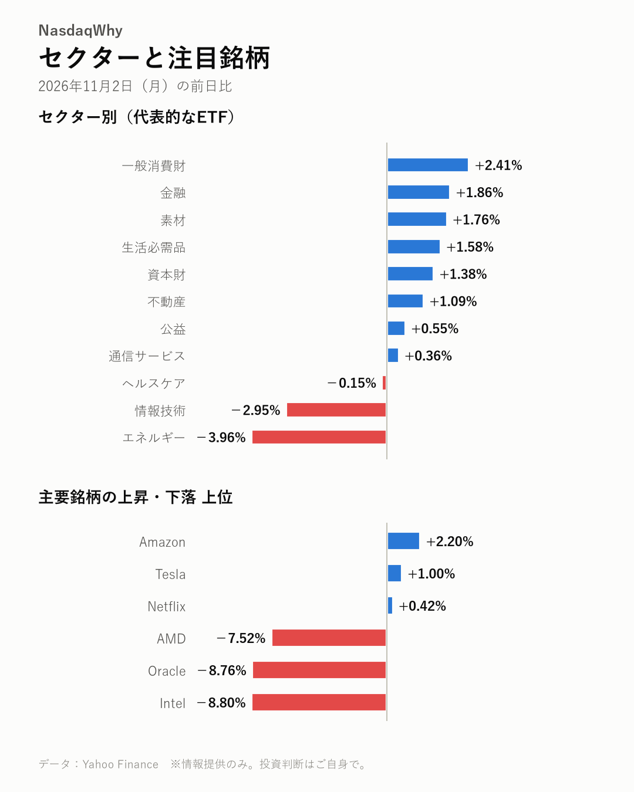

11/2の米国株：ハイテク株が売られ、ナスダック総合は-1.07%。ダウ平均は+0.41%と上昇し、明暗が分かれた。
2026年11月2日（月）の米国市場（日本時間の翌朝更新） ｜ 大幅変動

主要指数
| 名前 | 終値 | 前日比 | 騰落率 |
|---|---|---|---|
| ナスダック総合 | 25,164.32 | -272.68 | -1.07% |
| S&P500 | 7,541.40 | -38.67 | -0.51% |
| ダウ平均 | 51,983.98 | +213.67 | +0.41% |
| ナスダック100 | 27,989.82 | -395.03 | -1.39% |
| ラッセル2000 | 2,805.88 | -5.96 | -0.21% |
なぜ動いた？
- オラクルがAI投資に向けて新株と社債による資金調達を計画。負債増と希薄化への警戒から売りが膨らんだ。（出典：CNBC、Beinsure、Yahoo Finance）
- インテルは弱い業績見通しを嫌気した売りが続いた。半導体株全体にも売りが波及し、相場の重荷になった。（出典：FXLeaders、Gotrade、Yahoo Finance）
- AMDは決算を前に下落した。インテルが示したパソコン市場への警戒に加え、AI成長の不透明感も意識された。（出典：Pluang、Barchart.com）
深掘り：大きく動いた背景
ハイテク株に売りが集中し、ナスダック総合は-1.07%、ナスダック100は-1.39%と下げた。S&P500も-0.51%と軟調だが、ダウ平均は+0.41%と上昇し、指数間で明暗が分かれた。売りの起点の一つはオラクルだ。同社はAI基盤の整備に向け、新株と社債で資金を調達する計画を届け出た。株価は-8.76%と急落。バロンズは、計画そのものより実施の速さが驚きだったとの見方を示す。負債の増加や株式価値の希薄化を警戒する声もある。もう一つの震源はインテルだ。前の取引日に弱い業績見通しを受けて急落したが、この日も売りが続き、-8.80%と下げた。パソコン需要の低迷とメモリー価格の上昇が利益率を圧迫するとの懸念が根強い。不安はAMDにも及び、決算を前に-7.52%と売られた。市場が意識するのは、AI向けの成長がパソコン分野の不振を補えるかどうかだ。AI投資の資金負担も論点に浮上した。MarketWatchは、AI関連の人気株が数カ月にわたり売られ、不人気株のほうが好成績という異例の状況を指摘している。
セクター
エネルギーが-3.96%、情報技術が-2.95%と下げが目立った。半面、一般消費財は+2.41%、金融は+1.86%と上昇し、上昇した業種のほうが多かった。
- 騰落率の高い順：一般消費財 +2.41%、金融 +1.86%、素材 +1.76%
- 騰落率の低い順：エネルギー -3.96%、情報技術 -2.95%、ヘルスケア -0.15%

注目銘柄
インテルは-8.80%と売りが止まらず、資金調達計画を嫌気されたオラクルも-8.76%と急落。AMDは決算を前に-7.52%、マイクロンは-5.78%と半導体安が目立った。アマゾンは+2.20%と逆行高。
- 上昇：Amazon（AMZN）+2.20%、Tesla（TSLA）+1.00%、Netflix（NFLX）+0.42%
- 下落：Intel（INTC）-8.80%、Oracle（ORCL）-8.76%、AMD（AMD）-7.52%
関連市場
| 名前 | 終値 | 前日比 | 騰落率 |
|---|---|---|---|
| 米10年債利回り | 4.894% | -0.035pt | ― |
| ドル円 | 157.87 | +0.06 | +0.04% |
| 金先物 | 3,956.60 | +57.70 | +1.48% |
| 原油先物(WTI) | 96.26 | -7.86 | -7.55% |
| ビットコイン | 76,712.47 | -485.74 | -0.63% |
原油先物は-7.55%と急落したが、明確な材料は見当たらない。米10年債利回りは4.894%に低下。金先物は+1.48%、ビットコインは-0.63%。ドル円はほぼ横ばいだ。
今後の注目
- AMDの決算。AIの成長がパソコン不安を補えるかが焦点だ。（富途牛牛）
- アップルとパランティアの決算発表。（Yahoo Finance）
- 12/9（水） 来月のFOMC（米連邦公開市場委員会）の金融政策発表。（公式発表）
出典（見出し）
- CNBC：Oracle files to sell $20 billion in new stock, bonds to finance AI buildout（記事）
- Beinsure：Oracle (NYSE: ORCL) stock price forecast: $20 bn AI financing raises debt and dilution risks（記事）
- Yahoo Finance：Oracle Sinks 7% on $20 Billion Stock and Bond Sale to Fund AI Buildout（記事）
- FXLeaders：INTC Stock Rebounds to $67.34 in Premarket After Intel’s Weak Q4 Outlook（記事）
- Gotrade：Intel Stock (INTC) Falls 28.6% After Q4 Forecast Miss (Oct 30)（記事）
- Yahoo Finance：The Intel stock collapse is getting worse — and the $3.7 trillion chip rout is spreading（記事）
- Pluang：AMD shares fall 3% ahead of earnings amid Intel's PC market warning and AI growth uncertainty.（記事）
- Barchart.com：AMD Stock Got Caught in Intel’s Selloff. What to Watch This Week.（記事）
- 富途牛牛：One-Chart Preview | AMD's Q3 earnings report will be released after the market closes on November 3! Following Intel's sharp decline, a critical test lies ahead—can AI growth offset concerns about PCs?（記事）
- Yahoo Finance：Stocktwits Tech Watch: Apple And Palantir To Kick Off Tech Earnings In Another Crucial Week, AMD To Settle Chip Debate After Intel’s Warning（記事）
データ：Yahoo Finance